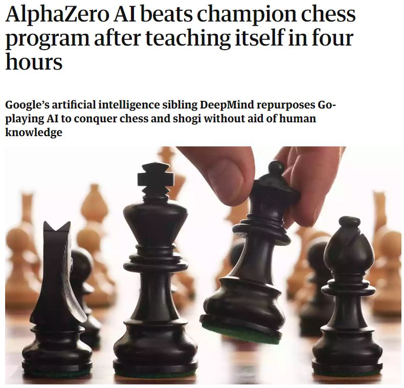
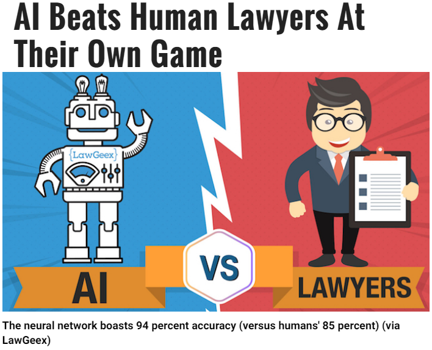
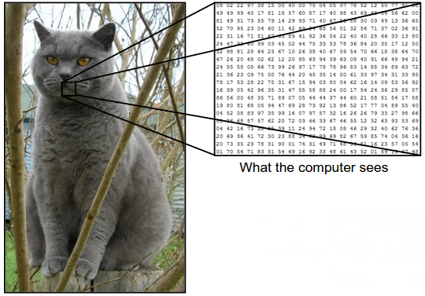

Since the boom of artificial intelligence, every industry is being disrupted with powerful neural networks that can beat humans at a whole bunch of things.
First AI Beat us at Chess

Now they've become better lawyers

Basically there’s no limit to what AI can do.
These advances got me really excited about artificial intelligence, so I decided to create my own neural network. I made an artificial neural network that can diagnose malaria.
According the World Health Organization there were about 220 million cases of malaria in 2017 alone and the death tole has reached over 500,000.
To sum up, neural networks take information from the input layer, process it in the hidden layers, and output the desired information in the output layer. This whole process of running a neural network is called forward propagation.
Being able to diagnose malaria is so important because it helps people get treatment sooner and stops them from spreading it to other people.
The reality is that not everyone has the same access to healthcare as we do in Canada. Many people in third world countries get little to no healthcare. Using artificial intelligence we can make diagnostic medical care more accessible.
I created a CNN (convolutional neural network) to classify images of blood smears as either infected with malaria, or not infected.
What is a CNN?
A convolutional neural network is basically just a series of various filters. The order of these layer types and how much you use them decide how well the network does.
It takes the image and converts it into a matrix of numbers by taking the RGB values of each pixel so that the computer can run math on the image.

The network converts the image into a matrix of numbers called a tensor
Convolution Layers
These layers are the what make convolutional neural networks unique. (That’s why its literally in the name).
What they do on a basic level is learn what features to look for in an image. Then it puts the filter over every part of the image to give it a score on how much that part of the image matches the filter.

In the gif, the green table represents a simplified version of an image. The 1s represent a black pixel and a zero represents a white pixel.
The yellow 3x3 table is a filter that checks for a certain type of pattern in the image called a feature. If you were classifying a car, you might have 1 filter for wheels, another for a windows etc. This filter is called a feature map.
The feature map moves around the image to check how much that feature is present in that part of the image. Then it takes that score and puts it in a new matrix that will be fed to the next part of the network. In this case that is the pink table.
The score is made by multiplying the value of the feature map by the value of image pixel it overlaps with. Then you add up all the products and put that in the new table. The feature map, then shifts to a different part of the image and does the same thing.
In the gif, you can see the values of the filter map as the red numbers. In that case you can see it checking for an X in every part of the image.
Pooling Layers
These layers are a great way to reduce to amount of information the neural network has to process. It takes sections of the image and compresses them. It moves around the image similar to a convolution layer.

One example of a pooling technique is max pooling. This moves around the image, and grabs the largest value from a given section of the image.
These are run after a convolution layer. Remember that the values in a convoluded layer represent how present a certain feature is in an image. So max pooling gets rid of the all small numbers so that the neural network basically just gets a list of features that are present and how strongly present they are.
Another type of pooling is average pooling. This takes the average of an area instead of just the highest value. Max pooling tends to be more widely used.
Fully Connected Layer
This layer is like a traditional neural network where every node in one layer is connected to every node in the next layer.
Fully connected layers come towards the end of a convolutional neural network. The idea is that by then, each node has 1 value representing how present a feature was in the image.
This layer is then trained to assign each feature a certain say in what the image is classified.
For example, if we were classifying images as cats or dogs, a feature map that checks for eyes in the image would be given a very low weight (because dogs and cats both have eyes so this doesn’t help much with the prediction). But a feature like triangular ears would be given a much higher weight because that’s something that cats have, but dogs don’t.
These features then feed into output nodes. The number of output nodes depends on the number of objects the model is trained to classify.
You can learn more about how the neural networks assigns its weights here.
How I Built My Model

My Code for the Neural Network Architecture
The first line of code defines the structure of the neural network as sequential. This just means that each layer feeds directly to the next layer and no layers ever connects backwards.
Each time I call the “model.add” function, I’m just adding a layer to the structure of the neural network.
A “Conv2d” is just a 2D convolution layer (since we are dealing with 2 images). 64 represents the number of features the layer tests for. The 3x3 defines how big the feature map is. And the input shape literally defines the size of the image being inputted. the 3 represents the RGB layers. The “relu” activation function just turns all negative numbers into zeros.
A “MaxPooling2D” is literally a 2D max pooling layer. The (2, 2) defines the dimensions of the filter. This means that its will always take the highest value from each 2x2 section of the image.
The dropout layer tells the layer to randomly disable nodes during training. (The 0.2 means there’s a 20% chance they will be disabled). I did this because sometimes, neural networks let one part of the network dominate other parts so then the other parts don’t get trained.
It’s like if you had 1 really loud person on a team giving ideas. The other people may just not be confident enough to contribute. So you just need to shut up that loud guy, so that the other people have a chance to contribute to the team. A dropout layers tells one part of the network to rest so the others have a chance to train and get better.
The “Flatten” layer just takes a 2D matrix and turns it into a 1D matrix. e.g. flattening a 4x5 layer into a 20x1 matrix.
The Dense Layer just adds a layer with a certain number of nodes. (In this case there are 64). This is a fully connected layer that assigns weight to each feature. You might remember that I had the first convolutional layer output 64 features. This is why this dense layer has 64 nodes: 1 for each feature.
The last Dense layer has a number of nodes equivalent to the number of classes the network identifies. In this case that variable is set to 2. This layer uses a “softmax” activation function instead of a “relu”. This just makes sure that the final outputs add up to one. This way we get a percent probability for each class. E.g. the final outputs might be 0.76 and 0.24. This means that the image has a 76% chance of being one class and a 24% chance of being another.
The final line of code tells the network what it should optimize for and how to calculate its loss (how bad its doing).
· · ·
After running 40 training cycles (known as epochs), my model went from:
Epoch 1/40
40/40 [==============================] - 188s 5s/step - loss: 0.7726 - acc: 0.5260 - val_loss: 0.6968 - val_acc: 0.4700
a 47% accuracy, to a:
Epoch 40/40
40/40 [==============================] - 132s 3s/step - loss: 0.1700 - acc: 0.9500 - val_loss: 0.2158 - val_acc: 0.9637
96% accuracy.
My model had 96% accuracy! If I ran the model for even more epochs, I could probably get even higher!
This beats microscopy diagnosis methods which only have an accuracy of 93%.
By putting this neural network on the internet, we can make malaria diagnosis relatively more accessible.
Now if you’re in a poor country, you don’t need a doctor to diagnose yourself, you just need 1 smartphone to diagnose as many people as you want. By making malaria diagnosis much more affordable and accessible we can save tens of thousands of lives.
Artificial intelligence will truly disrupt the future of medicine and I can’t wait to see it happen.